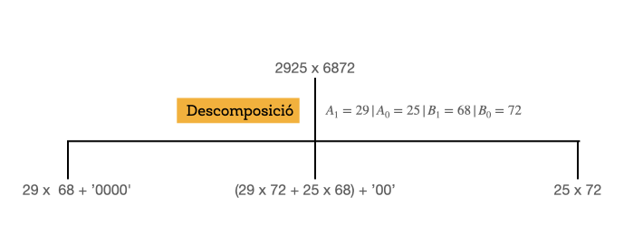
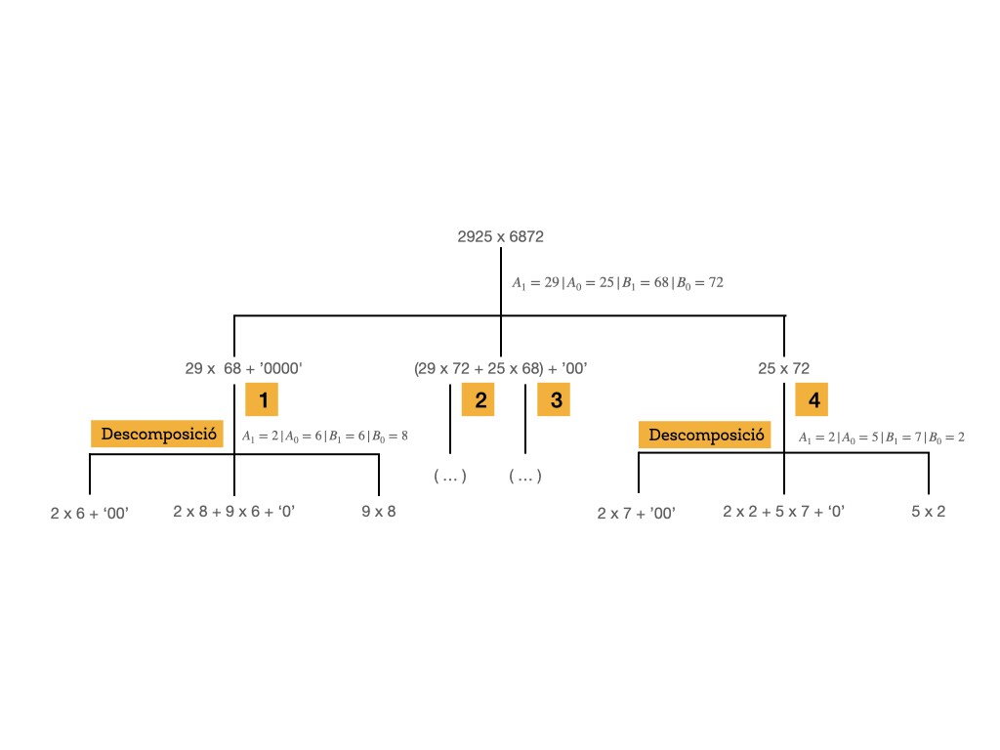
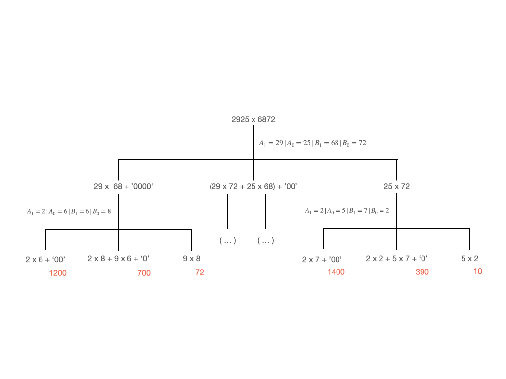
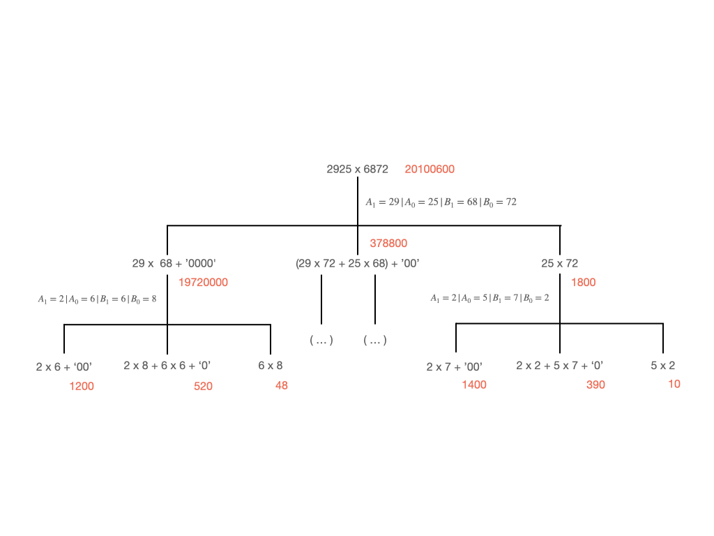
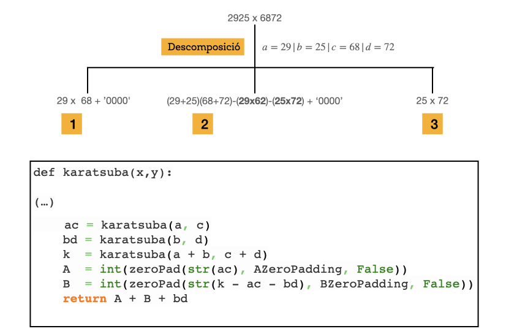

class: center, middle <center><img src="images/ub.png" width="150"></center> # **ALGORÍSMICA** ## Karatsuba Jordi Vitrià, Mireia Ribera .blue[jordi.vitria@ub.edu] | .blue[ribera@ub.edu] --- ## Karatsuba Usant l'algorisme que hem après a l'escola, sabem que dos nombres, `A` i `B`, de `n` **dígits** (tant se val si són bits o els símbols del sistema de numeració decimal) es poden multiplicar amb \\( O(n^2) \\) operacions. **Propietat de la multiplicació (sistema decimal)**: + Sigui \\( A = A_1 10^{n/2} + A_0 \\) amb \\( A_0 < 10^{n/2} \\) + Sigui \\( B = B_1 10^{n/2} + B_0 \\) amb \\( B_0 < 10^{n/2} \\) + Llavors \\( C = A * B = (A_1 10^{n/2} + A_0)(B_1 10^{n/2} + B_0) \\) es pot calcular com: \\[ A_1 B_1 10^{n} + (A_1 B_0 + A_0 B_1) 10^{n/2} + A_0 B_0\\] *Exemple*: \\[ 2925 \times 6872 = (29 \times 10^2 + 25) \times (68 \times 10^2 + 72) = \\] \\[ 29 \times 68 \times 10^4 + (29 \times 72 + 25 \times 68) \times 10^2 + 25 \times 72 \\] --- ## Karatsuba Hem de fer 4 multiplicacions: \\( A_1 B_1, A_1 B_0, A_0 B_1, A_0 B_0 \\), atès que les operacions relacionades amb els exponents són simples escriptures amb desplaçament. L'algorisme recursiu funcionaria d'aquesta manera: <center></center> --- ## Karatsuba <center></center> --- ## Karatsuba <center></center> --- ## Karatsuba <center></center> --- ## Karatsuba Però el matemàtic rus Anatoli Karatsuba (1937-2008) es va adonar que el càlcul de els tres termes \\( (A_1 B_1, (A_1 B_0 + A_0 B_1), A_0 B_0) \\) es pot fer en tres multiplicacions i no en 4! + Suposem que tenim 4 nombres \\( a, b, c, d \\) i volem calcular \\( ac, (ad + bc), bd \\). + Sabem que \\( (a+b)(c+d) = ac + ad + bc + bd \\) + Si calculem primer \\( ac \\) i \\( bd \\), llavors podem calcular \\( (ad + bc) \\) d'aquesta manera: \\( (ad + bc) = (a+b)(c+d) - ac - bd \\) I això són 3 crides recursives enlloc de 4: + Descomposem els nombres en 4 parts, \\( a, b, c, d \\). + Calculem recursivament \\( ac \\). + Calculem recursivament \\( bd \\). + Calculem recursivament \\( (a+b)(c+d) \\). + Calculem \\( (ab + bc) \\) com \\( (a + b)(c + d) – ac – bd \\). + Afegim \\(n\\) zeros al final de \\( ac \\) i n'hi diem A. + Afegim \\(n/2 \\) zeros al final de \\( ab + bc \\) i n'hi diem B. + Retornem \\( A + B + bd \\). --- ## Karatsuba <center></center> La recursivitat s'atura quan queda un sol dígit. L'algorisme que hem vist és només vàlid per xifres que es poden escriure amb un nombre parell de dígits, però no és dificil generalitzar-ho a totes! --- ## Karatsuba Per calcular la seva complexitat podem fer servir el teorema Master. En el cas de l'algorisme de Karatsuba tenim 3 crides recursives (\\( a = 3 \\)), que intenten resoldre un problema que té \\( \frac{1}{2} \\) de la mida original (\\( b = 2 \\)) i l'algorisme fa una sèrie d'operacions que són sumes i restes (amb operands grans) de complexitat \\( O(n) \\) (\\( d = 1 \\)). Amb aquests valors aplica el tercer cas del teorema Master \\( (3 > 2^1) \\) i tenim: \\[ O(n^{\log_2 3}) = O(n^{1.585}) \\] --- ## Teorema Master **Teorema:** Si `T(n)=aT(n/b)+O(n^d)` per algunes constants `a>0`, `b>1`, i `d>=0`, llavors: + **Cas 1**: \\( T(n) = O(n^d) \\) si \\( a < b^d \\). + **Cas 2**: \\( T(n) = O(n^d \log n) \\) si \\( a = b^d \\). + **Cas 3**: \\( T(n) = O(n^{\log_b a}) \\) si \\( a > b^d \\).